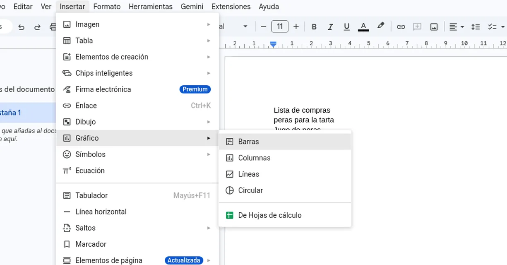
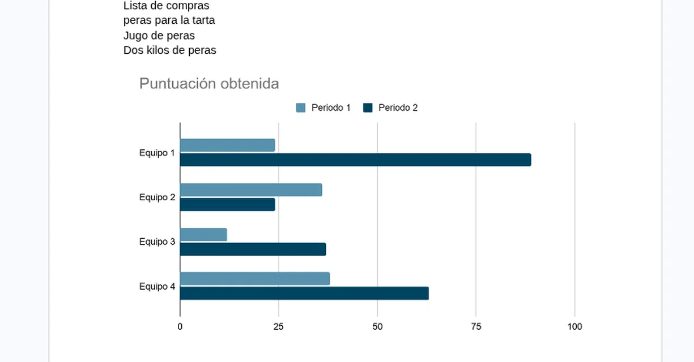
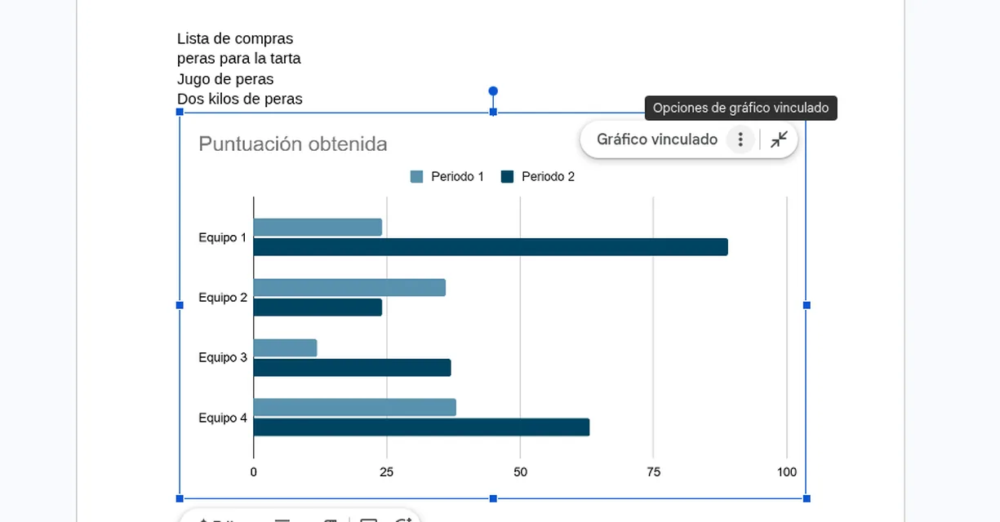
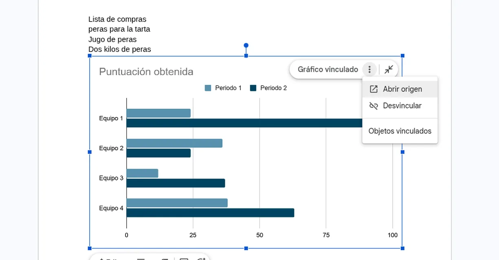
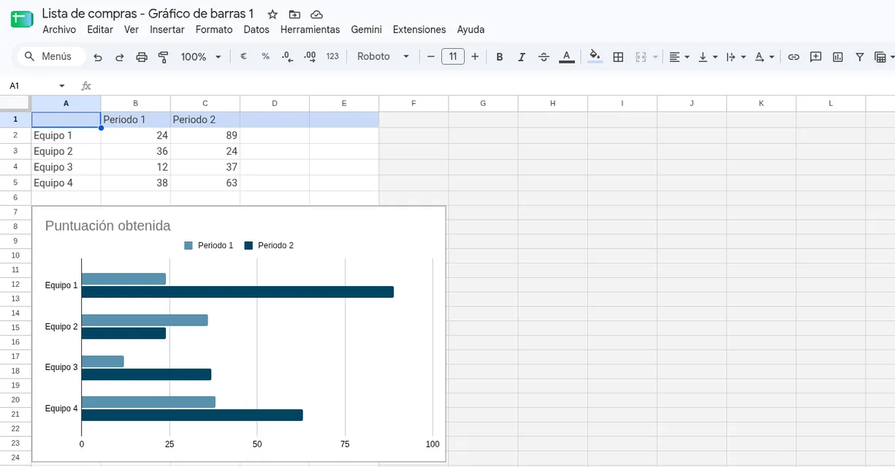
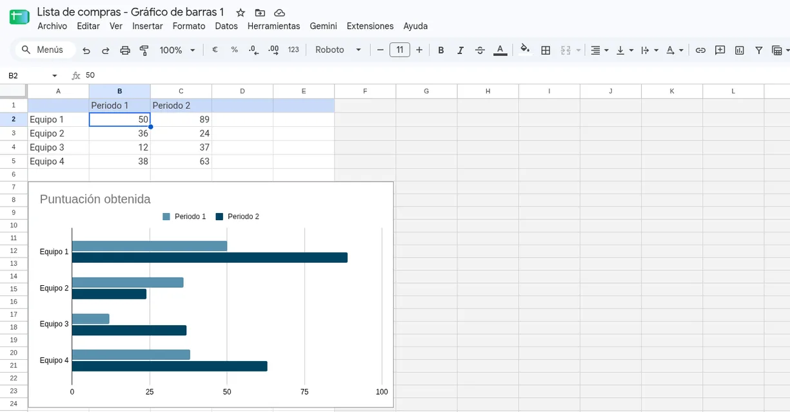
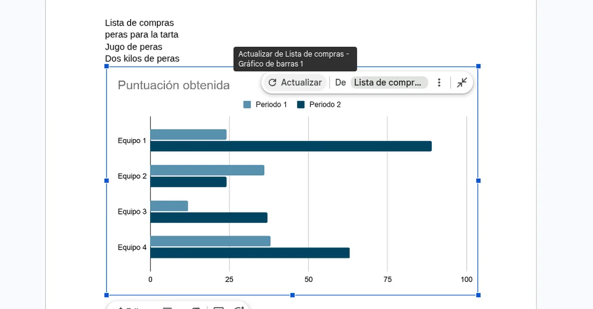
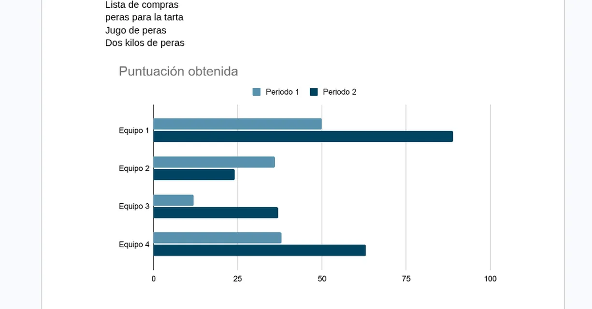
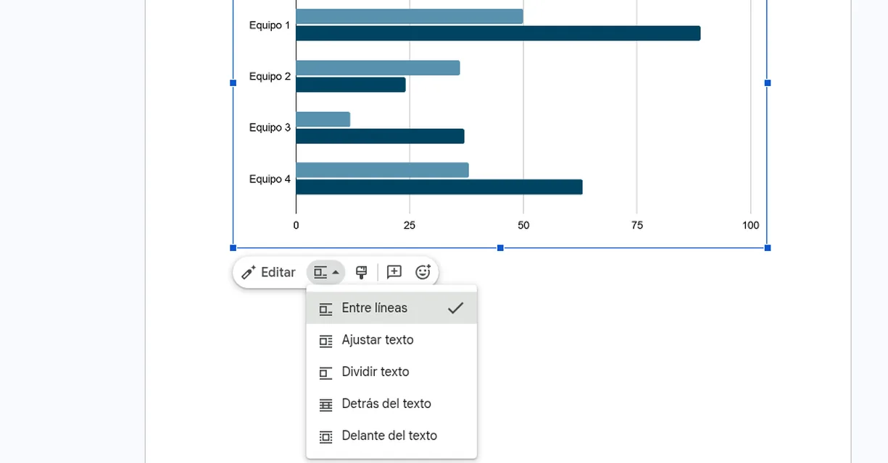
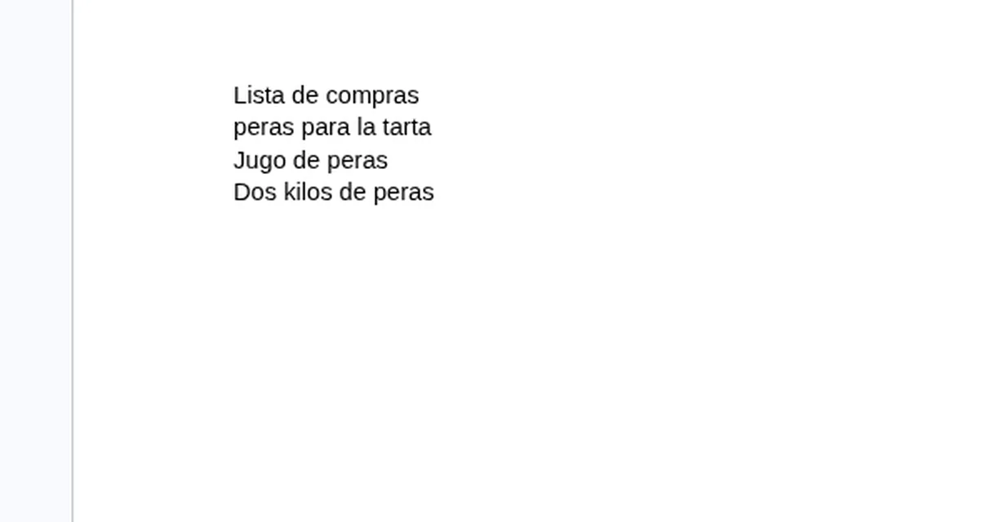

Curso de Google Documentos › Insertar › Lección 24
Lección 24 de 53 · menú Insertar
Cómo insertar un gráfico en Google Docs y actualizarlo
Fecha del video: · Programado
¿Querés poner un gráfico en Google Docs? Con Insertar → Gráfico elegís el tipo: Barras, Columnas, Líneas o Circular. El gráfico aparece con datos de muestra y queda vinculado a una hoja de cálculo nueva: cambiás los números ahí y en el documento tocás Actualizar. Acá lo vemos paso a paso.
En el ejemplo usamos el documento «Lista de compras» e insertamos un gráfico de barras. Al final lo borramos (y también la hoja de cálculo de prueba que se creó), así todo quedó como estaba. Ojo con los nombres: la ayuda de Google dice «Desde Hojas de cálculo», «Opciones para vincular» y «Abrir fuente»; en la pantalla dice De Hojas de cálculo, Opciones de gráfico vinculado y Abrir origen.
Paso 1: Insertar → Gráfico → elegí el tipo
Arriba, en la barra de menús, tocá Insertar y después Gráfico. Se despliega un submenú con los tipos: Barras, Columnas, Líneas y Circular. Más abajo está De Hojas de cálculo, para traer un gráfico de una hoja que ya tenés. En el ejemplo elegimos Barras.

¿Cuál conviene? Según la ayuda de Google, los de barras sirven para mostrar la diferencia entre categorías, los de líneas para ver tendencias en el tiempo y el circular (o de torta) para mostrar partes de un todo.
Paso 2: el gráfico aparece con datos de muestra
El gráfico se inserta donde estaba el cursor, con datos de ejemplo que pone Google (en este caso, «Puntuación obtenida» con Equipo 1 a 4 y Periodo 1 y Periodo 2). Además, Docs crea una hoja de cálculo nueva en tu Drive y deja el gráfico vinculado a ella: en el ejemplo se llamó «Lista de compras - Gráfico de barras 1».

Paso 3: tocá el gráfico: «Gráfico vinculado»
Hacé clic en el gráfico. Arriba a la derecha aparece Gráfico vinculado con un botón de tres puntitos ⋮ (su ayuda dice «Opciones de gráfico vinculado»). Abajo aparece la barra flotante con Editar y las opciones de ajuste de texto.

Paso 4: ⋮ → «Abrir origen»
Tocá los tres puntitos. El menú tiene Abrir origen (abre la hoja de cálculo vinculada), Desvincular (el gráfico queda fijo, ya no se actualiza) y Objetos vinculados. Elegí Abrir origen.

Paso 5: la hoja de cálculo con los datos
Se abre en otra pestaña la hoja de cálculo vinculada: arriba, la tabla con los datos (Equipo 1 a 4, Periodo 1 y Periodo 2) y abajo el mismo gráfico.

Paso 6: cambiá los números
Escribí los datos que quieras. En el ejemplo, la celda B2 (Equipo 1, Periodo 1) pasó de 24 a 50, y el gráfico de la hoja cambió al instante.

Paso 7: volvé al documento y tocá «Actualizar»
En el documento el gráfico todavía muestra los datos viejos: tocalo y arriba aparece el botón Actualizar (su ayuda dice «Actualizar de» y el nombre de la hoja). Tocalo.

Listo: el gráfico del documento toma el dato nuevo.

Paso 8: elegí cómo se acomoda el texto
Con el gráfico seleccionado, en la barra de abajo están las opciones de ajuste de texto: Entre líneas (la opción por defecto), Ajustar texto, Dividir texto, Detrás del texto y Delante del texto.

Importante: según la ayuda de Google, las personas que tengan acceso a tu documento pueden ver los gráficos vinculados, aunque no tengan acceso a la hoja de cálculo original. Al final borramos el gráfico y el documento quedó como al principio.

Fuentes oficiales: Vincular un gráfico, una tabla o diapositivas a Presentaciones o Documentos de Google y Tipos de gráficos de Hojas de cálculo de Google. Para cambiar el tipo, los títulos o los colores desde la hoja: Cómo agregar y editar un gráfico. Mirá también el menú Insertar completo (video: Google Docs: menú Insertar paso a paso) y la lección anterior, Dibujos.
Mirá el Short
Estreno del Short: 03/12/2026 · 17:00 (hora Argentina)
Video relacionado: Google Docs: menú Insertar paso a paso (tutorial completo) — el video largo del menú Insertar (verlo en YouTube).
Fuente oficial: Ayuda de Editores de Documentos de Google. Capturas propias en un documento de ejemplo («Lista de compras»). El video usa voz generada con IA.